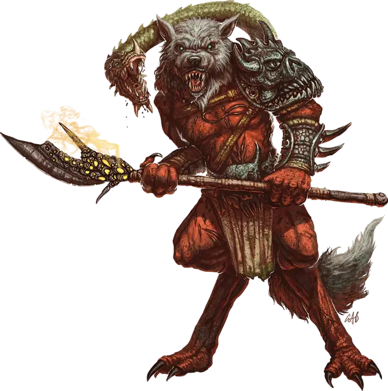

Молидей
Molydeus
Огромное Исчадие (Демон), обычно хаотично-злое

Класс Доспеха 19 (природный доспех)
Хиты 216 (16к12 + 112)
Скорость 40 футов
| мод | спас | ||
|---|---|---|---|
| СИЛ | 28 | +9 | +16 |
| ЛОВ | 22 | +6 | +6 |
| ТЕЛ | 25 | +7 | +14 |
| мод | спас | ||
|---|---|---|---|
| ИНТ | 21 | +5 | +5 |
| МДР | 24 | +7 | +14 |
| ХАР | 24 | +7 | +14 |
Навыки Восприятие +21
Сопротивление урону огонь, холод, электричество; дробящий, колющий, рубящий от немагических атак
Иммунитет к урону яд
Иммунитет к состояниям отравление, очарование, испуг, ошеломление, истощение
Чувства истинное зрение 120 футов, пассивное Восприятие 31
Языки Бездны, Телепатия 120 фт.
Опасность 21 (33000 опыта)
Бонус мастерства +7
Особенности
Легендарное сопротивление (3/день). Если молидей проваливает спасбросок, он может вместо этого сделать спасбросок успешным.
Сопротивление магии. Молидей совершает с преимуществом спасброски от заклинаний и прочих магических эффектов.
вариант: призыв демона. Вы можете дать молидею способность к призыву других демонов.
Призыв демона (1/день). Молидей, потратив действие, может призвать с 50-ти % шансом: 1к6 бабау [babaus], 1к4 чазма [chasmes], или 1 марилита [marilith].
Призванный демон появляется в свободном пространстве, которое может видеть молидей в пределах 60 футов от себя, и выступает в качестве союзника молидея, но не может призывать других демонов. Демон призывается на 1 минуту, либо пока не умрёт молидей, либо пока молидей не отзовёт его действием.
Действия
Мультиатака. Молидей совершает одну атаку Демоническим оружием, одну атаку Волчьим укусом и одну атаку Змеиным укусом.
Демоническое оружие. Рукопашная атака оружием: +16 к попаданию, досягаемость 15 фт., одна цель. Попадание: 35 (4к12 + 9) урона силовым полем. Если у цели атаки как минимум одна голова, и Молидей выбрасывает 20 при броске атаки, то цель обезглавливается и умирает, если не может жить без головы. Цель невосприимчива к этому эффекту, если она не получила урона от атаки, обладает легендарными действиями, или имеет размер Огромный или больше. Кроме того, цель получает дополнительно 27 (6к8) урона силовым полем.
Змеиный укус. Рукопашная атака оружием: +16 к попаданию, досягаемость 15 фт., одно существо. Попадание: 16 (2к6 + 9) урона ядом. Цель должна преуспеть в спасброске Телосложения 22 или её максимальное значение хитов уменьшится на значение полученного урона от этой атаки. Уменьшение хитов сохраняется до того, как цель закончит продолжительный отдых. Цель превращается в мэйна [manes], если её максимальное значение хитов становится равно 0. Превращение может быть отменено только заклинанием исполнение желаний [wish].
Волчий укус. Рукопашная атака оружием: +16 к попаданию, досягаемость 10 фт., одна цель. Попадание: 25 (3к10 + 9) урона некротической энергией.
Использование заклинаний. Молидей накладывает одно из следующих заклинаний, используя Харизму в качестве базовой характеристики и без использования материальных компонентов (Сл спасброска от заклинаний 22):
• Неограниченно: рассеивание магии [dispel magic], превращение [polymorph], телекинез [telekinesis], телепортация [teleport];
• 3/день: молния [lightning bolt].
Легендарные действия
Молидей может совершить 3 легендарных действия, выбирая из представленных ниже вариантов. За один раз можно использовать только одно легендарное действие, и только в конце хода другого существа. Молидей восстанавливает использованные легендарные действия в начале своего хода.
Атака. Молидей совершает одну атаку Демоническим оружием или Змеиным укусом.
Передвижение. Молидей передвигается, не провоцируя атаки.
Накладывание заклинания (стоит 2 действия). Молидей накладывает заклинание с помощью Использования заклинаний.
Описание
Молидей уполномочен говорить за лорда демона, которому он служит, исполняя волю своего хозяина. Ростом иногда в 12 футов, молидей, внешне выглядит как краснокожий гуманоид с двумя головами, одна из которых, распускающая слюни, волчья голова, а другая – змеиная, с острыми и стекающими ядом клыками. У лорда демонов есть прямая связь с его молидеем и он использует его змеиную голову для распространения своих желаний. Молидей, тем самым, обращает волю хозяина, подчиняя прочих демонов выполнять приказы и прибегает к насилию для обеспечения их повиновения.
Лорд демонов дарует демону хранителю мощное оружие, которое растворяется, если молидеус умирает. Форма оружия меняется в зависимости от создателя, но это не влияет на возможности оружия.